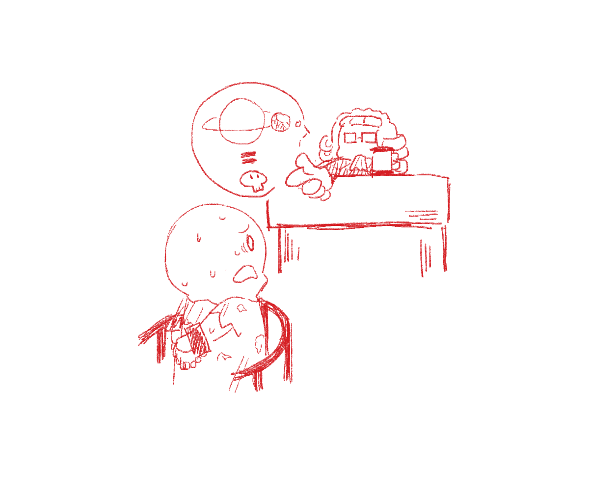

Câu 1.
Bạn bị phán quyết tử hình vì tuyên bố Mặt Trời đứng yên — bạn sẽ làm gì?

① Nhượng bộ, đưa ra tuyên bố ngược lại để sống.
② Chấp nhận phán quyết, giữ vững lập trường.
③ Cố gắng thuyết phục mọi người tin vào thuyết của mình.